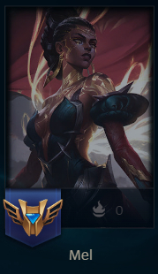
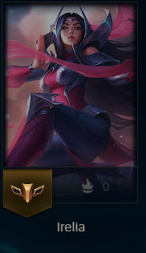

Counters y no Counters de Yone
Principales counters o champs dificiles de jugar en contra
Al jugar Yone hay ciertos campeones que pueden ser difíciles de enfrentar como:
MEL
la cual pokea mucho y con su e y w hace counter a la pasiva de la q de yone lo que hace difícil farmear y matar.
Irelia
gracias a su pasiva que le aumenta el daño, al cargar su pasiva yone no puede ganar el trade ya que se come mucho daño y lo fuerza a backear perdiendo farm